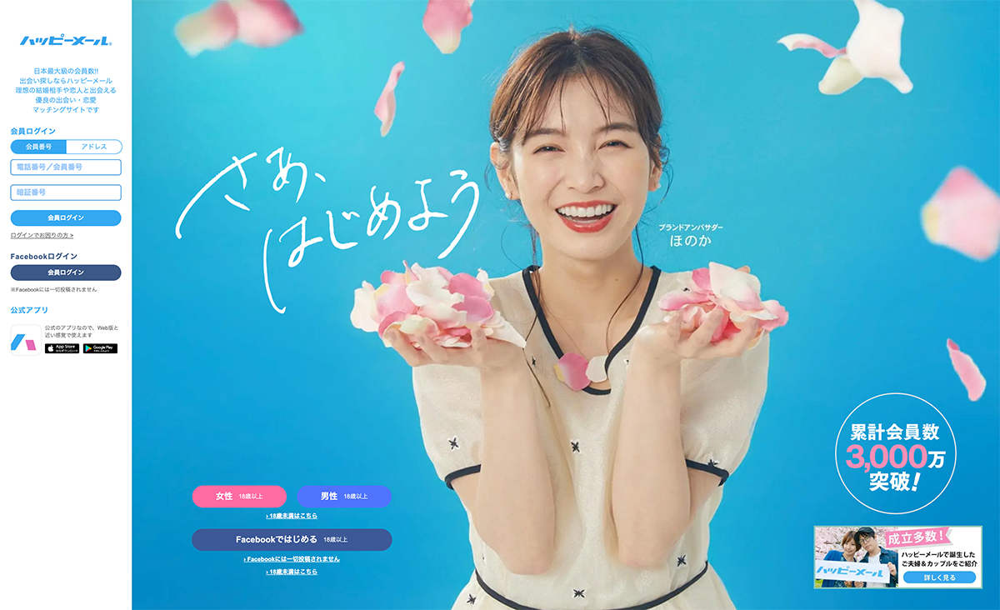
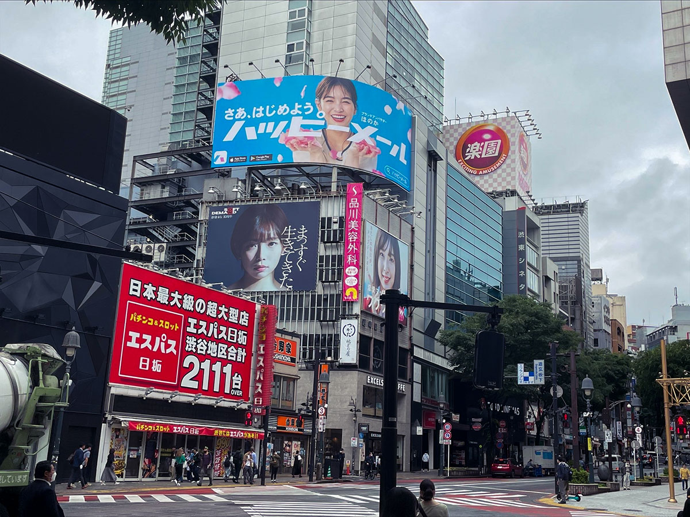

メインビジュアル、看板
モデル変更関連
-
担当
撮影提案、スチールレタッチ、看板デザイン作成、MVデザイン作成
-
使用ツール
Photoshop:メインビジュアル、画像加工
Adobe XD:ワイヤーフレーム、デザインカンプ
-
ポイント
2年ぶりのイメージモデル変更のため、若い女性向けにイメージを変更したいという依頼でした。初稿ではくすみカラーを使用し、花の色味も鮮やかでしたが、社長確認の際にコーポレートカラーの明るい水色にして欲しいとの要望をいただきました。若手の女性社員にアンケートをしたところ、初稿の方くすんだ色味の方が好評だったため、コーポレートカラーも用いたグラデーションに変更し、今回のようなビジュアルになりました。花びらは、置いたものと、実際に空中に投げたもの、モデルの前で投げるものなどいくつかパターンを撮影していただき、自然な花吹雪になるよう工夫しました。看板では見やすさを優先しタグラインを太めのゴシックのフォントで作成しましたが、WebのTOPやアプリ用では手書きのタグラインに変更したものも作成し、軽く親しみやすい雰囲気になったため、こちらを採用していただきました。実際にお客様や看板を見た方からもイメージが変わったとの声をいただき、大変やりがいのあるプロジェクトでした。


戻る